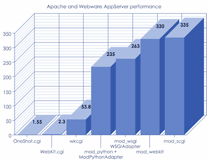

In order to get a feeling for the performance of the different ways of connecting Apache to the Webware application server, I have recently done some benchmarking using the Colors example servlet.
The test was done with Apache 2.2 32bit connecting to the Webware 1.1 ThreadedAppServer, running under MS Windows 7 on an Intel Quad core CPU with 2.66GHz. Here is the result:
As expected, mod_webkit and mod_scgi are giving the best performance, while WebKit.cgi and OneShot.cgi have the worst performance, since as classic CGI programs they are creating new processes for each request, each firing up a new Python interpreter.
Interestingly, the performance of mod_wsgi with the WSGIAdapter is also not so bad. Note that the test was done using embedded mode without any optimization, and maybe the performance could be improved in daemon mode with proper configuration.
Note that mod_webkit is a part of Webware for Python, while the other Apache modules are third party projects.
-- ChrisZwerschke, 18 Apr 2010